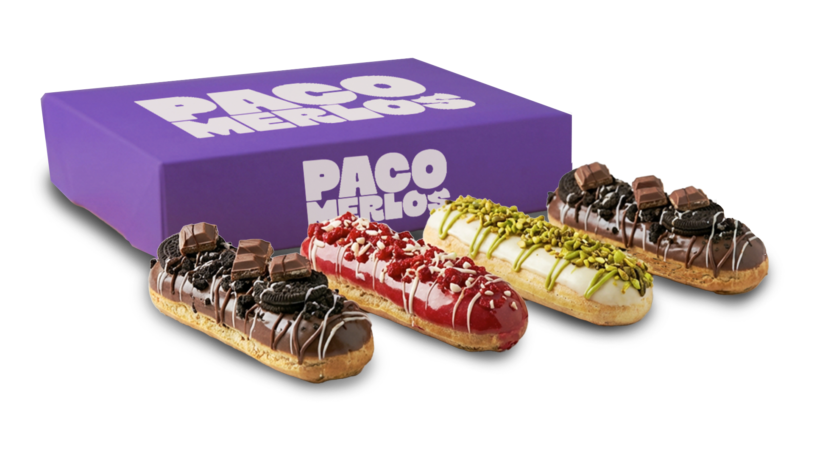

Detrás del obrador
SOMOS
PACO
MERLOS
No somos una franquicia, no tenemos fábrica. Somos un obrador en Madrid que hace bollería artesanal con las manos, cada mañana, sin excusas.

Nuestra historia
TODO
EMPEZÓ
EN MADRID
En 2020 empezamos con una pregunta simple: ¿por qué es tan difícil encontrar bollería de verdad en Madrid? No algo bonito para Instagram. Algo bueno de verdad, hecho con tiempo y con las manos.
La respuesta fue los Paquitos. Masa madre fermentada 48 horas, rellenos hechos a diario, sin conservantes ni ingredientes que no puedas pronunciar. Y un nombre que lleva nuestra firma.
En qué creemos
LO QUE NOS
DEFINE
Sin
prisas
La masa madre necesita 48 horas. No 24, no 36. Los atajos se notan en el resultado y nosotros no nos los podemos permitir.
Sin
trampa
Sin aditivos, sin conservantes, sin mezclas industriales. Todo lo que va dentro de un Paquito lo puedes leer en una etiqueta de supermercado.
Sin
disculpas
Si no está recién hecho, no sale. Si no está bien, no sale. Preferimos hacer menos y hacerlo bien que llenar una vitrina con producto mediocre.
¿AÚN NO
LOS HAS
PROBADO?
Encuéntralos en el punto de venta más cercano o síguenos en Instagram para saber cuándo hay novedades.